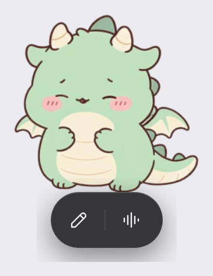
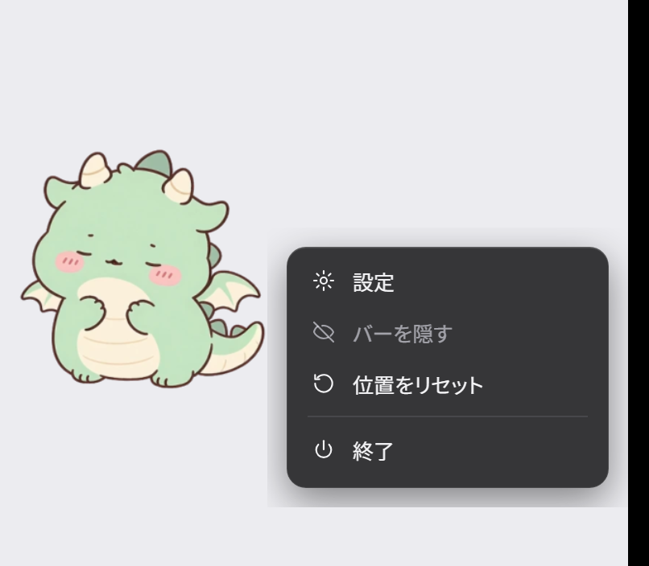
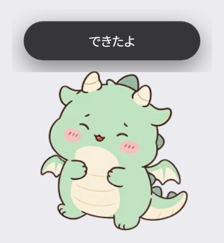
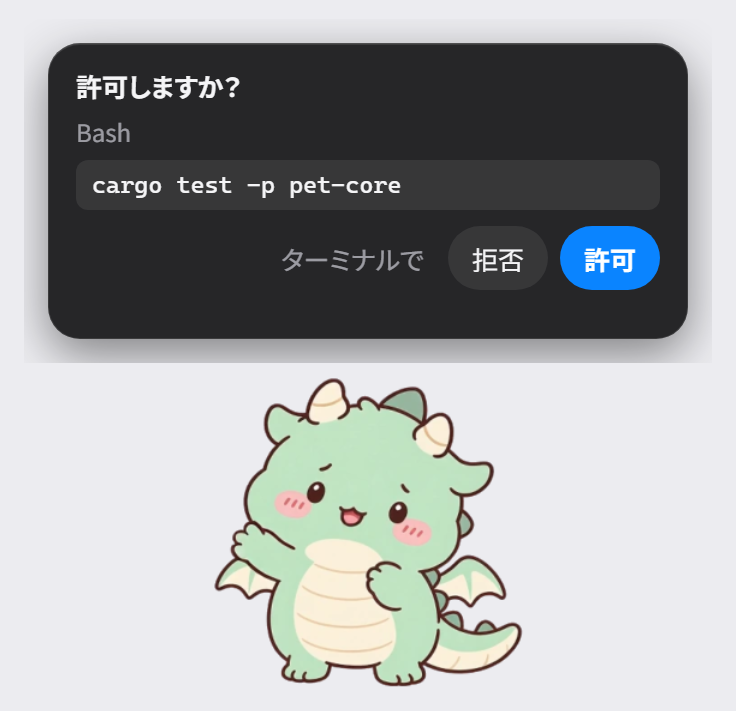
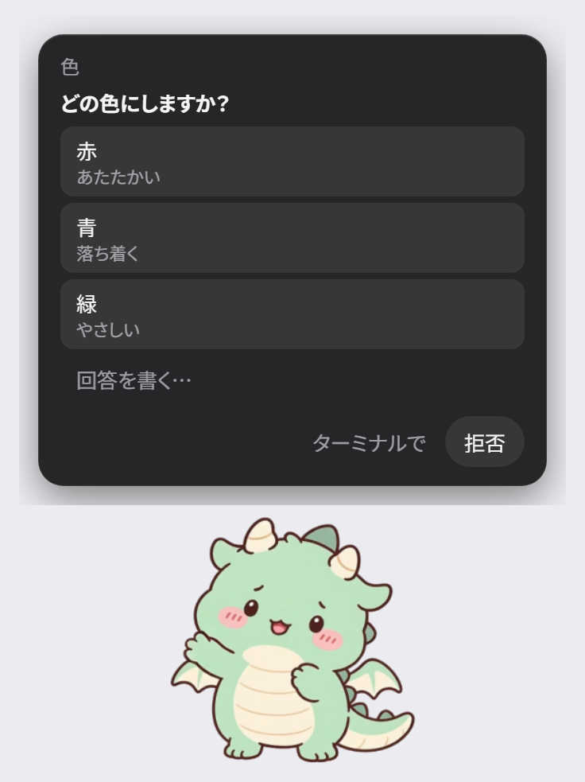
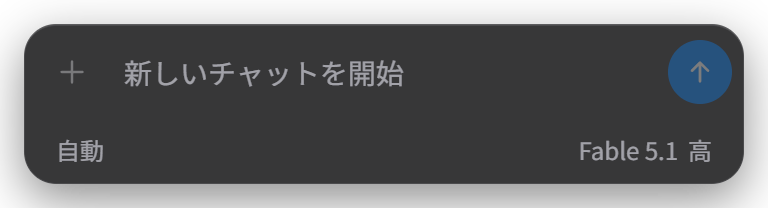
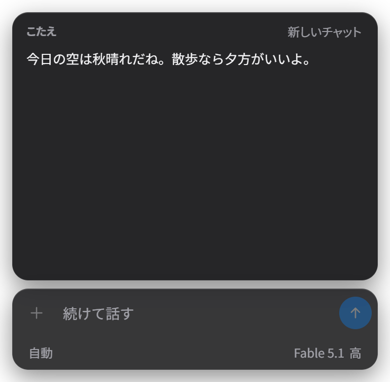
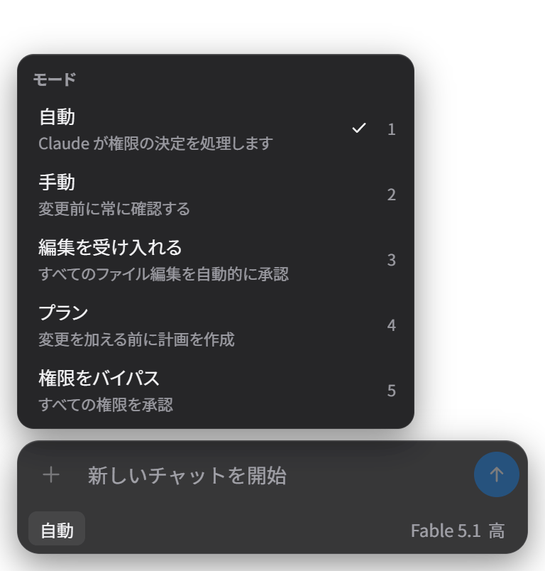
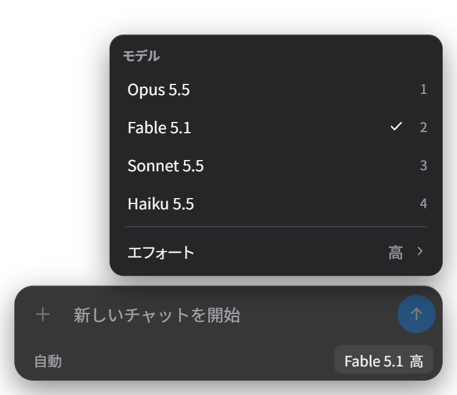
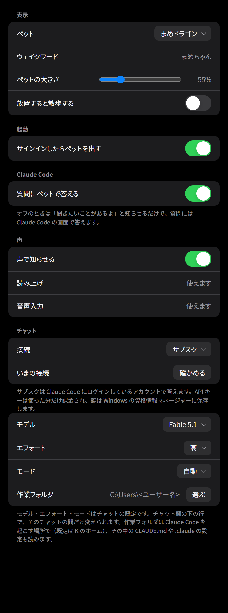

pet-claude マニュアル
Claude Code と一緒に動く、Windows のデスクトップペット
2026 年 10 月 28 日版。手順だけを読みたいときは docs/usage.md、設計は docs/architecture.md。
1. はじめに
pet-claude は、Claude Code の様子に合わせて動く小さなキャラクターをデスクトップに出すアプリです。他のウィンドウの上に浮かび、フォーカスは奪いません。Claude Code が承認や回答を待っていると吹き出しで知らせ、ペットから答えを返せます。チャットと音声入力もペットから使えます。
できること
- Claude Code の状態（作業中・入力待ち・完了・失敗）に合わせてポーズが変わり、吹き出しと声で知らせる
- 承認待ちと質問を吹き出しのカードで受け、「許可」「拒否」や選択肢を返す
- チャット: Claude Code と同じ環境の新しいセッションに送り、答えを吹き出しと声で返す
- 音声入力（ローカルで文字起こし）と読み上げ（AivisSpeech）
- ペットは 6 体から選ぶ。大きさも変えられる
画面の名前
このマニュアルでは、ペットの周りに出る部品を次の名前で呼びます。

バー: クリックかホバーでペットの下に出る。左がチャット、右が音声入力

メニュー: 右クリックで出る（設定・バーを隠す・位置をリセット・終了）

吹き出し: 「できたよ」などの短い知らせ。3 秒で消える

承認のカード: Claude Code の承認待ちを吹き出しに出す
このほかに、バーのチャットから開くチャット欄（4 章）と、メニューから開く設定画面（6 章）があります。
2. 基本の操作
起動と終了
- 普段は Windows タスク
pet-claude が、サインインの 10 秒後にペットを出します（設定「サインインしたらペットを出す」がオンのとき）。
- 手で出すときは
pet-app.exe を起動します。pet-hook.exe と同じフォルダに置いておきます。
- 設定画面をすぐ開きたいときは
pet-app.exe --open-settings。
- 二重には起動しません。すでに出ているときは、新しい方が静かに終わります。
- 終わるときは、メニューかトレイのアイコンの「終了」。
マウスの操作
| 操作 | 何が起きるか |
|---|
| 左クリック | ペットがなでられた反応をし、下にバーが出る。もう一度クリックすると閉じる |
| カーソルを乗せて 0.2 秒 | 同じバーが出る。ペットとバーから離れて 0.4 秒で閉じる。クリックすると固定される |
| 右クリック | メニュー（設定・バーを隠す・位置をリセット・終了） |
| ドラッグ | つままれたポーズで動く。離すと置かれ、画面の外には出ない。位置は画面ごとに覚える |
放っておいたとき
- 設定「放置すると散歩する」がオンなら、90 秒ほど何もしないと散歩を始めます（既定はオフ）。
- 5 分ほどで眠ります。Claude Code が動き出すか、クリックすると起きます。
- 全画面のアプリを使っている間は前に出ません。閉じると戻ります。
ペットが見当たらないときは、トレイのアイコンの「位置をリセット」で、手前の画面の決まった場所に戻ります。
3. Claude Code との連携
Claude Code の hooks から pet-hook.exe が呼ばれ、ペットに状態を伝えます。hooks は ~/.claude/settings.json に登録済みです。登録し直すときは pet-app.exe --install-hooks、外すときは --uninstall-hooks。pet-app.exe を別の場所に移したら登録し直します。
状態の知らせ
- Claude Code が動き出すと、ペットが作業のポーズになります。
- 応答が終わると 1 回喜んで「できたよ」。失敗すると「失敗しちゃった」。
- 入力を待っていると「入力を待ってるよ」。
承認のカード
ツール名と要約。「ターミナルで」「拒否」「許可」
- Claude Code がツールの承認を待つと、ペットがこちらを見て、カードが出ます。
- 「許可」か「拒否」を押すと、Claude Code はそのまま進みます。
- 「ターミナルで」を押すと、いつもの画面で答える流れに戻ります。デスクトップアプリから来た要求では「Claude アプリで」になります。
- 「許可」が無いカードは、要約が操作の全部を見せていないときです（ファイルの本文を書く Write や Edit、長いコマンドなど）。そのときはいつもの画面で答えます。
- 押さずに 1 分ほど放置すると、カードは下がり、Claude Code のいつもの流れに戻ります。
- 同時に複数来たときは古い順に 1 枚ずつ出ます（「ほかに N 件」）。
質問のカード

選択肢を押して答える。「回答を書く…」で自由に書ける
- Claude Code が質問（
AskUserQuestion）をすると、質問のカードが出ます。
- 選択肢を押すと答えになります。複数選択の質問は、選んでから「決定」。
- 「回答を書く…」を押すと、チャット欄が答えの入力に変わります。
- 質問が複数あるときは 1 問ずつ進み、全部答えてから Claude Code に返します。
- 設定「質問にペットで答える」をオフにすると、カードは出さず「聞きたいことがあるよ」とだけ知らせます。
4. チャット
ペットから Claude に話しかけられます。送り先は Claude Code の対話と同じ環境（設定・CLAUDE.md・スキル・hooks・MCP）の新しいセッションです。送るたびに claude -p を起こすので、答えまで 20 秒ほどかかることがあります。
送る

チャット欄。上が入力、下の行がモードとモデル・エフォート
- バーの左のボタン（鉛筆）を押すと、ペットの下にチャット欄が開きます。
- 文を打って Enter か右の矢印ボタンで送ります（2000 字まで）。
- 答えは吹き出しに 1 行、チャット欄の上に全文が出ます。吹き出しに収まらないときは「続きを見る」で開きます。
- 続けて打つと同じ会話の続きです。「新しいチャット」を押すと会話を忘れます。

答えが出たところ。右上の「新しいチャット」で最初から
モード・モデル・エフォートを切り替える

左の「自動」を押すとモードの一覧

右の「Fable 5.1 高」を押すとモデルの一覧。「エフォート ›」で強さ
- チャット欄の下の行で、左がモード（権限の扱い）、右がモデルとエフォートです。押すとメニューが上に出ます。数字キーでも選べます。
- ここで変えた値はそのチャットの間だけ効き、「新しいチャット」で設定画面の既定に戻ります。
- 同じ hooks が効くので、チャットから承認待ちになるとペットの承認カードが出ます。ファイルを書かせる作業は、モードを「編集を受け入れる」にすると編集で止まらなくなります。
閉じる
- チャット欄は、ペットを左クリックすると閉じます。
- Esc や外のクリックでは閉じません（日本語入力の取り消しに Esc を使うため）。
接続と作業フォルダ
- 接続は設定「接続」で選びます。既定はサブスク（Claude Code にログインしているアカウント）。API キーを選ぶと使った分だけ課金されます。
- 設定「いまの接続」の「確かめる」で、いまの接続で答えられるかを調べます。
- 作業フォルダは設定「作業フォルダ」。既定はホームで、選んだフォルダの CLAUDE.md と
.claude も読みます。
5. 音声入力と読み上げ
音声入力（話してチャットに送る）
初回だけ、リポジトリの scripts\setup-stt.ps1 を PowerShell で 1 回実行します（文字起こしの Python 環境と faster-whisper small を用意します）。設定画面「音声入力」の行が「使えます」になれば準備できています。
右の波形のボタンが音声入力
- バーの右のボタン（波形）を押すと録音が始まり、ボタンが赤く脈打ちます。
- 話し終えて 1 秒黙ると自動で止まり、文字起こしを経てチャットに送ります。
- もう一度押すと、その場で止めて送ります。
- 5 秒以内に話し始めないと取りやめます。1 回の録音は 15 秒までです。
- 聞き取った文は、チャット欄の答えの上に「」付きで出ます。
- マイクがミュートだと「マイクがミュートになっているよ」。Windows のサウンドの設定か、キーボードのミュートキーを見ます。
- 録音はファイルに残しません。
読み上げ（声で知らせる）
設定「声で知らせる」をオンにします。声は AivisSpeech の天深シノです。
- 読むのは、チャットの答え（吹き出しの 1 行）と固定の文（できたよ・失敗しちゃった・入力を待ってるよ・確認してほしいことがあるよ・聞きたいことがあるよ）。
- 同じ文は 15 秒以内に繰り返しません。
- AivisSpeech エンジンが動いていなければペットが起こします（使えるまで 20 秒ほど）。ペットが起こしたエンジンは、10 分話さなければ止めます（約 3.4GB のメモリを使うため）。
- エンジンの場所は
%USERPROFILE%\dev\voice\_engines\AivisSpeech\AivisSpeech-Engine\run.exe。無いときは設定画面「読み上げ」の行に「エンジンが見つかりません」と出て、黙ります。
- 答えに URL やパス、コードらしい文字列が入っていると、吹き出しには出さず「答えはチャット欄に出したよ」と言います。
6. 設定画面
メニューかトレイのアイコンの「設定」で開きます。項目を変えるとすぐ効き、保存ボタンはありません。

設定画面（上から 表示・起動・Claude Code・声・チャット）
| 項目 | 内容 |
|---|
| ペット | 使うペットを選ぶ。足元の位置と大きさはそのまま |
| ウェイクワード | 選んだペットの呼びかけの言葉を見るだけ（呼びかけで音声入力を始める機能は保留中） |
| ペットの大きさ | 25〜150%。既定 55% |
| 放置すると散歩する | 既定オフ。眠るのは設定に関係なく眠る |
| サインインしたらペットを出す | Windows タスク pet-claude を登録する。開くたびにタスクの実物を読み直す |
| 質問にペットで答える | 既定オン。オフだと「聞きたいことがあるよ」と知らせるだけ |
| 声で知らせる | 読み上げのオン・オフ |
| 読み上げ | AivisSpeech の状態（使えます／エンジンは話す時に起こします／エンジンが見つかりません） |
| 音声入力 | 文字起こしの状態（使えます／準備が要ります／マイクが見つかりません／ミュート） |
チャットの節
| 項目 | 内容 |
|---|
| 接続 | サブスクか API キー。API キーは Windows の資格情報マネージャーに保存し、画面には読み返さない |
| いまの接続 | 「確かめる」で接続を試す（15 秒以内） |
| モデル | チャットの既定。Opus 5.5・Fable 5.1・Sonnet 5.5・Haiku 5.5。既定 Fable 5.1 |
| エフォート | 低・中・高・最高・最大。既定 高 |
| モード | 権限モード。自動・手動・編集を受け入れる・プラン・権限をバイパス。既定 自動 |
| 作業フォルダ | Claude Code を起こす場所。既定はホーム。「選ぶ」で変え、「既定に戻す」で戻す |
7. ペットの切り替えと追加
切り替える
- 設定「ペット」で選びます。同梱は 6 体: まめドラゴン、りんりん（パンダ）、とらちゃん（茶トラ）、しばちゃん（黒柴）、こむぎちゃん（ハムスター茶）、ごまちゃん（ハムスター灰）。
- まだ選んでいなければ、まめドラゴンで起動します。
- 選んだペットの呼びかけの言葉が「ウェイクワード」の行に出ます。呼びかけで音声入力を始める機能はいまは保留中で、表示だけです。
足す
- ペットは 1 つのフォルダ（
pet.json とスプライトシート）です。%LOCALAPPDATA%\pet-claude\pets\<id>\ に置くと、次に設定画面を開いたときに一覧に出ます。
- 状態ごとの静止画（ファイル名に
idle walk working attention happy confused sleeping dragged を含む PNG か WebP）があれば、リポジトリで次のコマンドを実行するとペットのフォルダができます。足りない状態は近い絵で埋めます。
cargo run --release -p pet-core --example build_pet -- <静止画のフォルダ> <出力フォルダ> <id> <表示名>
- 姿勢の間を動画でつなぐペット（同梱の 6 体はこの形）の作り方は、プロジェクトスキル
.claude/skills/make-pet-clips/ と、各ペットのフォルダの SOURCE.md にあります。
8. 困ったとき
| 症状 | 見るところ・やること |
|---|
| ペットが出ない | ログ %LOCALAPPDATA%\pet-claude\logs\pet.log の末尾を見る。「既に起動しているので終了」ならもう出ている（別の画面か、全画面アプリの裏）。トレイのアイコンの「位置をリセット」で手前の画面に戻る |
| 起動時にダイアログが出る | ペットを 1 つも読めない。pets\<id>\pet.json の場所と中身を確かめる。--pet で指定したフォルダが読めないときも同じ |
| 承認のカードが出ない | pet-app.exe --install-hooks を実行して登録を確かめる。pet-hook.exe が pet-app.exe と同じフォルダにあるか見る。ログに permission requested が無ければ hook が届いていない |
| チャットが「うまくいきませんでした」 | チャット欄に理由が出る。設定「いまの接続」の「確かめる」を押す。claude が PATH にあるか、ログインが切れていないかを見る |
| 声が出ない | 設定「読み上げ」の行の状態を見る。エンジンの場所が違うなら 5 章のパスに置く。Windows の出力デバイスも見る |
| 音声入力が動かない | 設定「音声入力」の行の状態を見る。「準備が要ります」なら scripts\setup-stt.ps1 を実行する |
| 設定を最初からやり直したい | ペットを終了してから %LOCALAPPDATA%\pet-claude\state.json を消す（大きさ・位置・ペットの選択・チャットの既定が初期値に戻る。API キーは資格情報マネージャーに残る） |
ログには本文も答えも鍵も書きません。設定ファイルにも鍵は入りません。
設計の詳しい説明は docs/architecture.md、手順の一覧は docs/usage.md にあります。